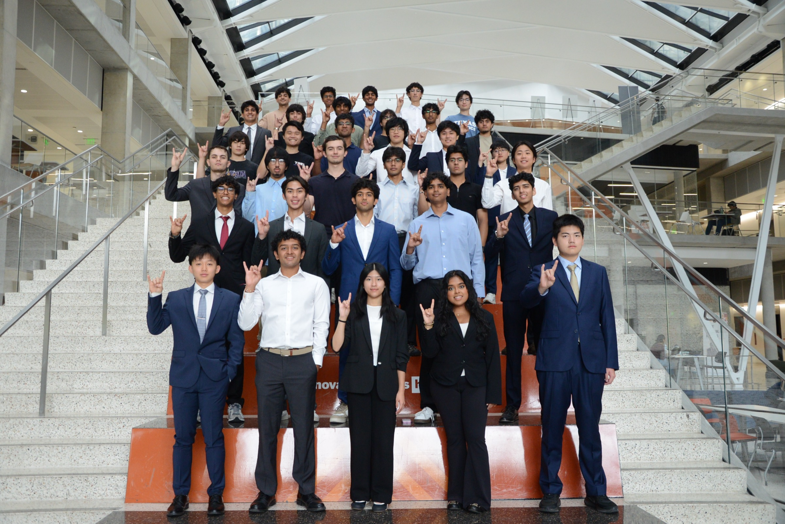
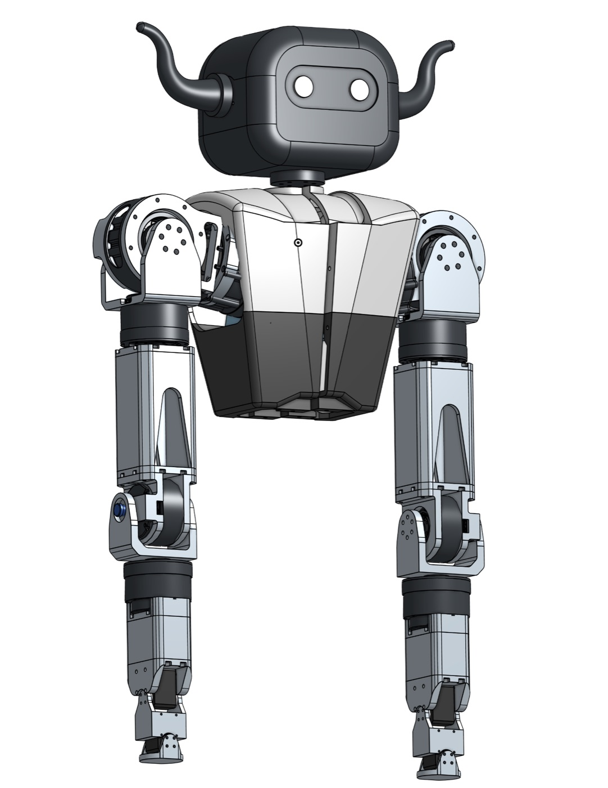
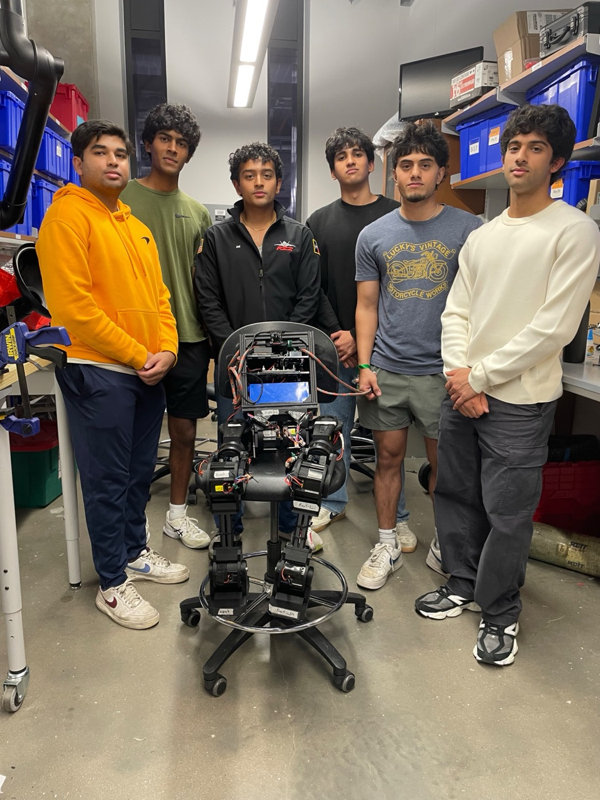
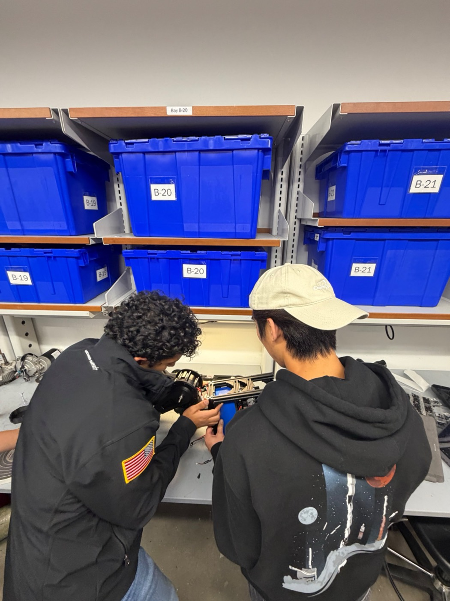

TexasHumanoids
Forty undergraduate engineers at UT Austin building the university's first open-source humanoid robot.
Backed by
Texas Humanoids is UT Austin's first undergraduate humanoid robotics team. We develop the next generation of humanoid engineers and build open, affordable humanoid robots for research along the way.
Talent
Students get hands-on experience designing, building and testing a full humanoid, from actuators and electronics to controls and perception.
Research platforms
We design robots that research labs in Texas can own, modify and build on. Our requirements come from conversations with UT Austin labs.
Our robots
We are building three robots in sequence. Each one is a step toward an open, affordable humanoid for research.

Bob the Walker
A simple biped we built so our software team can test controls on real hardware.
Read more
Texas Humanoid
A lower-cost humanoid designed around the needs of UT Austin research labs.
Read more
BevoBot
A larger humanoid built with Dr. Justin Hart's Living with Robots Lab.
Read moreTimeline
From the lab
Photos from build nights, testing and design reviews.
View the gallery



Work with us
We work with companies through mentorship, recruiting, hackathons and sponsorship. Get in touch to talk about a partnership.